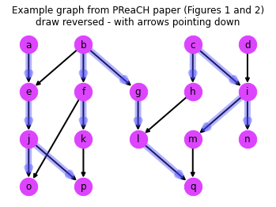
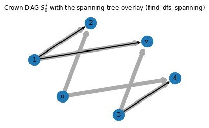

Reachability queries
Finding if one vertex in the DAG is reachable from another, with the help of various reachability indexes (labels)
Imports for the git_commit_graph_ext.reachability module generated from this notebook
Reachability queries with topological levels and min-post intervals
Start with what was defined in the original Google Colab notebook, called there generic_is_reachable().
It will not be using FELINE index though, as it seems that this type of index is not a good fit for large commit graphs.
Recursive chatty version (levels + min-post) - generic_is_reachable
This recursive version is based on the Algorithm 3 from the FELINE paper, translated from pseudocode to Python (and NetworkX).
generic_is_reachable
generic_is_reachable (DG, u, v, II=None, l=None, stats=None, verbose=None)
Whether in graph DG \(v\) is reachable from \(u\), utilizing given indices
Given (u, v) ∈ V², two vertices in the DAG given by the DG parameter, calculate r(u,v), that is whether vertex v is reachable from vertex u.
This is based on the Algorithm 3 from FELINE paper, translated from pseudocode to Python (and NetworkX).
NOTE: this is a straightforward recursive version of the function.
| Type | Default | Details | |
|---|---|---|---|
| DG | NetworkX digraph | Directed acyclic graph. | |
| u | node | Source node. | |
| v | node | Target node. | |
| II | NoneType | None | A dictionary with nodes as keys and min-post interval index as values (2-element lists, representing intervals). |
| l | NoneType | None | A dictionary with nodes as keys and backward topological vertex level as values (vertex level is also known as generation number). |
| stats | NoneType | None | A dictionary gathering statistics about calls. Currently supported are: * ‘access’ key, counting the number of intermediate vertices it checks / accesses * ‘level’ key, storing list of vertices where level index cut off further walk (further search) * ‘walk’ key, with list of all vertices walked, in order * ‘min-post’ key, storing the vertex at which positive-cut min-post interval cut-off the need for further search |
| verbose | NoneType | None | Whether to print debugging information. If set to None (the default), it prints debugging information if stats parameter is set. |
| Returns | bool | Whether v is reachable from u |
Test that everything works. For this we need example graphs, and a way to compute reachability levels
# example graphs
import git_commit_graph_ext.example_graphs as graphs
# reachability indexes
from git_commit_graph_ext.labelling.levels import *
from git_commit_graph_ext.labelling.dfs_intervals import *
# plotting, for visualizations
import networkx as nx
import matplotlib.pyplot as pltUse the example graph from the PReaCH paper for testing
# lazy generation of the graph
try:
ch
except NameError:
ch=graphs.RCH_graph()
recalculate = True
if recalculate or not hasattr(ch, 'lvl'):
ch.lvl = find_levels(ch) # TODO: pre-computed levels are forward levels
if recalculate or not hasattr(ch, 'mpi'):
ch.mpi = find_dfs_intervals(ch)
#print('%r' % ch)
print('graph has {} nodes and {} edges'.format(ch.number_of_nodes(), ch.number_of_edges()))
print('nodes: {!r}'.format(list(ch.nodes())))
print('it has the following attributes:')
for (attr,val) in ch.__dict__.items():
if isinstance(val, dict) and not attr.startswith('_'):
#print('- %s: %r' % (attr, ch.__dict__[attr]))
print('- %s' % attr)graph has 17 nodes and 19 edges
nodes: ['a', 'e', 'b', 'f', 'g', 'c', 'h', 'i', 'd', 'j', 'o', 'k', 'l', 'm', 'n', 'p', 'q']
it has the following attributes:
- graph
- lvl
- pos
- mpi
Wall time: 6.99 msplt.axis("off")
plt.title('Example graph from PReaCH paper (Figures 1 and 2)\ndraw reversed - with arrows pointing down')
nx.draw_networkx(ch,pos={key:(value[0],-value[1]) for (key,value) in ch.pos.items()},
node_size=500,width=2.0,node_color='#dd44ff')
nx.draw_networkx_edges(ch,pos={key:(value[0],-value[1]) for (key,value) in ch.pos.items()},
edgelist=find_dfs_spanning(ch),
node_size=500,
width=8.0,edge_color='#4444ff',alpha=0.4,arrowstyle='->')
plt.show()
# test unreachable
stats = {}
result = generic_is_reachable(ch, 'a', 'g', stats=stats)
print('r(%s,%s)=%r in %d steps (naive)\n %r\n' %
('a', 'g', result, stats['access'], stats))
stats = {}
result = generic_is_reachable(ch, 'a', 'g', II=ch.mpi, stats=stats)
print('r(%s,%s)=%r in %d steps (min-post)\n %r\n' %
('a', 'g', result, stats['access'], stats))
stats = {}
result = generic_is_reachable(ch, 'a', 'g', l=ch.lvl, stats=stats)
print('r(%s,%s)=%r in %d steps (level)\n %r' %
('a', 'g', result, stats['access'], stats))a->['e']
e->['j']
j->['o', 'p']
o->[]
p->[]
r(a,g)=False in 4 steps (naive)
{'access': 4, 'level': [], 'walk': ['a', 'e', 'j', 'o', 'p']}
a->['e']
e->['j']
j->['o', 'p']
o->[]
p->[]
r(a,g)=False in 4 steps (min-post)
{'access': 4, 'level': [], 'walk': ['a', 'e', 'j', 'o', 'p']}
a->['e']
e->g level cut ¬2 < 2
r(a,g)=False in 1 steps (level)
{'access': 1, 'level': ['e'], 'walk': ['a', 'e']}# test reachable
stats = {}
u='b'
v='o'
#u='c'
#v='q'
result = generic_is_reachable(ch, u, v, stats=stats)
print('r(%s,%s)=%r in %d steps (naive)\n %r\n' %
(u, v, result, stats['access'], stats))
stats = {}
result = generic_is_reachable(ch, u, v, II=ch.mpi, stats=stats)
print('r(%s,%s)=%r in %d steps (min-post)\n %r\n' %
(u, v, result, stats['access'], stats))
stats = {}
result = generic_is_reachable(ch, u, v, l=ch.lvl, stats=stats)
print('r(%s,%s)=%r in %d steps (level)\n %r\n' %
(u, 'g', result, stats['access'], stats))
stats = {}
result = generic_is_reachable(ch, u, v, II=ch.mpi, l=ch.lvl, stats=stats)
print('r(%s,%s)=%r in %d steps (min-post + level)\n %r' %
(u, v, result, stats['access'], stats))b->['e', 'f', 'g']
e->['j']
j->['o', 'p']
p->[]
f->['o', 'k']
k->['p']
p->[]
g->['l']
l->['q']
q->[]
r(b,o)=True in 11 steps (naive)
{'access': 11, 'level': [], 'walk': ['b', 'e', 'j', 'o', 'p', 'f', 'o', 'k', 'p', 'g', 'l', 'q']}
b->['e', 'f', 'g']
e->o min-post resolved 1 ∈ [1, 1] ⊆ [1, 4]
f->['o', 'k']
k->['p']
p->[]
g->['l']
l->['q']
q->[]
r(b,o)=True in 8 steps (min-post)
{'access': 8, 'level': [], 'walk': ['b', 'e', 'f', 'o', 'k', 'p', 'g', 'l', 'q'], 'min-post': 'e'}
b->['e', 'f', 'g']
e->['j']
j->['o', 'p']
p->o level cut ¬0 < 0
f->['o', 'k']
k->['p']
p->o level cut ¬0 < 0
g->['l']
l->['q']
q->o level cut ¬0 < 0
r(b,g)=True in 11 steps (level)
{'access': 11, 'level': ['p', 'p', 'q'], 'walk': ['b', 'e', 'j', 'o', 'p', 'f', 'o', 'k', 'p', 'g', 'l', 'q']}
b->['e', 'f', 'g']
e->o min-post resolved 1 ∈ [1, 1] ⊆ [1, 4]
f->['o', 'k']
k->['p']
p->o level cut ¬0 < 0
g->['l']
l->['q']
q->o level cut ¬0 < 0
r(b,o)=True in 8 steps (min-post + level)
{'access': 8, 'level': ['p', 'q'], 'walk': ['b', 'e', 'f', 'o', 'k', 'p', 'g', 'l', 'q'], 'min-post': 'e'}DFS walk version (levels + min-post) - generic_is_reachable_dfs
The code below was called generic_is_reachable_large_v1() and aliased to generic_is_reachable_large() in the original Google Colab notebook (see the index for reference); though the one below has had its support for FELINE labels removed.
generic_is_reachable_dfs
generic_is_reachable_dfs (DG, u, v, II=None, l=None, stats=None)
Whether in large graph DG \(v\) is reachable from \(u\), utilizing given indices
Given (u, v) ∈ V², two vertices in the DAG given by the DG parameter, calculate r(u,v), whether vertex v is reachable from vertex u.
This is non-recursive version of the function, without verbose mode, intended for larger graphs. It travels the graph using depth-first search (DFS).
| Type | Default | Details | |
|---|---|---|---|
| DG | NetworkX digraph | Directed acyclic graph. | |
| u | node | Source node. | |
| v | node | Target node. | |
| II | NoneType | None | A dictionary with nodes as keys and min-post interval index as values (2-element lists, representing intervals), e.g. result of find_dfs_intervals(). |
| l | NoneType | None | A dictionary with nodes as keys and vertex level as values (vertex level is also known as generation number), e.g. result of find_levels(). |
| stats | NoneType | None | A dictionary gathering statistics about calls. Currently supported are: * ‘access’ key, counting the number of intermediate vertices it checks / accesses. * ‘level-filter’ key, storing nodes that level index stopped searching at * ‘walk’ key, storing all walked nodes * ‘min-post’ key, storing node where min-post filter found reachable * ‘max-depth’ key, with maximum stack depth |
| Returns | bool | Whether v is reachable from u |
Basic test that generic_is_reachable_dfs() works (among others that there are no syntax errors).
stats = {}
#u='b'
u='a'
v='o'
print('graph has {} nodes and {} edges'.format(ch.number_of_nodes(), ch.number_of_edges()))
print('nodes: {!r}'.format(list(ch.nodes())))
print('it has the following attributes:')
for (attr,val) in ch.__dict__.items():
if isinstance(val, dict) and not attr.startswith('_'):
#print('- %s: %r' % (attr, ch.__dict__[attr]))
print('- %s' % attr)
result = generic_is_reachable_dfs(ch, u, v, II=ch.mpi, l=ch.lvl, stats=stats)
print('r(%s,%s)=%r in %d steps (min-post + level)\n %r' %
(u, v, result, stats['access'], stats))graph has 17 nodes and 19 edges
nodes: ['a', 'e', 'b', 'f', 'g', 'c', 'h', 'i', 'd', 'j', 'o', 'k', 'l', 'm', 'n', 'p', 'q']
it has the following attributes:
- graph
- lvl
- pos
- mpi
r(a,o)=True in 0 steps (min-post + level)
{'access': 0, 'level-filter': [], 'walk': ['a'], 'max-depth': 0, 'visited-filter': 0, 'min-post': 'a'}BFS walk version, actively developed - generic_is_reachable_bfs
This is called generic_is_reachable_large_bfs() (where BFS = breadth-first search) in the Google Colab notebook, but with the support for FELINE index stripped, and the support for PReaCH extensions to the min-post intervals index commented out; the support for min-post graph intervals as negative-cut filters was kept (was part of PReaCH extension).
This code tries to be more generic by separating reachable_positive_cut and reachable_negative_cut into their own functions, but they are still very much tied to given set of reachability indices.
Currently there is no way to add another index at later time (the design is not open to extensions), but making something generic may be not necessary as it is mainly exploraatory notebook. The code in Git would be written in C language, not in Python.
/opt/hostedtoolcache/Python/3.9.16/x64/lib/python3.9/site-packages/fastcore/docscrape.py:225: UserWarning: Unknown section Todo:
else: warn(msg)generic_is_reachable_bfs
generic_is_reachable_bfs (DG, u, v, II=None, l=None, stats=None)
Whether in large graph DG \(v\) is reachable from \(u\), utilizing given indices
Given (u, v) ∈ V², two vertices in the DAG given by the DG parameter, calculate r(u,v), whether vertex v is reachable from vertex u.
This is non-recursive version of the function, without verbose mode, intended for larger graphs.
| Type | Default | Details | |
|---|---|---|---|
| DG | NetworkX digraph | Directed acyclic graph. | |
| u | node | Source node. | |
| v | node | Target node. | |
| II | NoneType | None | A dictionary with nodes as keys and min-post interval index as values (2-element lists, representing intervals), e.g. result of find_dfs_intervals(). |
| l | NoneType | None | |
| stats | NoneType | None | |
| Returns | bool | Whether v is reachable from u |
walk_spanning
walk_spanning (DG, u, v, II)
Walk spanning tree from \(u\) to \(v\), return path or []
reachable_negative_cut
reachable_negative_cut (u, v, II=None, l=None, stats=None)
Whether given indices say that \(v\) is not reachable from \(u\)
Given (u, v) ∈ V², a negative cut happens if the index implies that vertex v is not reachable from vertex u.
r(u,v) => test(u,v)| Type | Default | Details | |
|---|---|---|---|
| u | node | Source node. | |
| v | node | Target node. | |
| II | NoneType | None | A dictionary with nodes as keys and min-post interval index as values (2-element lists, representing intervals), e.g. result of find_dfs_intervals(). |
| l | NoneType | None | |
| stats | NoneType | None | |
| Returns | bool | Whether index indicates that v is not reachable from u |
reachable_positive_cut
reachable_positive_cut (u, v, II=None, stats=None)
Whether given indices say that \(v\) is reachable from \(u\)
Given (u, v) ∈ V², a positive cut happens if the reachability index implies that vertex v is reachable from vertex u.
test(u,v) => r(u,v)| Type | Default | Details | |
|---|---|---|---|
| u | node | Source node. | |
| v | node | Target node. | |
| II | NoneType | None | A dictionary with nodes as keys and min-post interval index as values (2-element lists, representing intervals), e.g. result of find_dfs_intervals(). |
| stats | NoneType | None | |
| Returns | bool | Whether index indicates that v is reachable from u |
# lazy generation of the graph
try:
ch
except NameError:
ch=graphs.RCH_graph()
recalculate = False
if recalculate or not hasattr(ch, 'lvl'):
ch.lvl = find_levels(ch) # TODO: pre-computed levels are forward levels
if recalculate or not hasattr(ch, 'mpi'):
ch.mpi = find_dfs_intervals(ch)
if recalculate or not hasattr(ch, 'mpi_ext'):
ch.mpi_ext = find_dfs_intervals_extra(ch)
#print('%r' % ch)
print('graph has {} nodes and {} edges'.format(ch.number_of_nodes(), ch.number_of_edges()))
print('nodes: {!r}'.format(list(ch.nodes())))
print('it has the following attributes:')
for (attr,val) in ch.__dict__.items():
if isinstance(val, dict) and not attr.startswith('_'):
#print('- %s: %r' % (attr, ch.__dict__[attr]))
print('- %s' % attr)graph has 17 nodes and 19 edges
nodes: ['a', 'e', 'b', 'f', 'g', 'c', 'h', 'i', 'd', 'j', 'o', 'k', 'l', 'm', 'n', 'p', 'q']
it has the following attributes:
- graph
- lvl
- pos
- mpi
- mpi_extplt.axis("off")
plt.title('Example graph from PReaCH paper (Figures 1 and 2)\ndraw reversed - with arrows pointing down')
nx.draw_networkx(ch,pos={key:(value[0],-value[1]) for (key,value) in ch.pos.items()},
node_size=500,width=2.0,node_color='#dd44ff')
nx.draw_networkx_edges(ch,pos={key:(value[0],-value[1]) for (key,value) in ch.pos.items()},
edgelist=find_dfs_spanning(ch),
node_size=500,
width=8.0,edge_color='#4444ff',alpha=0.4,arrowstyle='->')
plt.show()
# test unreachable
stats = {}
result = generic_is_reachable_bfs(ch, 'a', 'g', stats=stats)
print('r(%s,%s)=%r in %d steps (naive)\n' %
('a', 'g', result, stats['access']))
statsr(a,g)=False in 4 steps (naive)
{'negative-cut': {'visited': []},
'depth': {'a': 0, 'e': 1, 'j': 2, 'o': 3, 'p': 3},
'prev': {'a': None, 'e': 'a', 'j': 'e', 'o': 'j', 'p': 'j'},
'access': 4,
'walk': ['a', 'e', 'j', 'o', 'p'],
'max_queue_size': 2,
'visited': {'a', 'e', 'j', 'o', 'p'}}# test unreachable
stats = {}
result = generic_is_reachable_bfs(ch, 'a', 'g', l=ch.lvl, stats=stats)
print('r(%s,%s)=%r in %d steps (level)\n' %
('a', 'g', result, stats['access']))
statsr(a,g)=False in 1 steps (level)
{'negative-cut': {'level_lite': [], 'level_full': ['e'], 'visited': []},
'depth': {'a': 0, 'e': 1},
'prev': {'a': None, 'e': 'a'},
'access': 1,
'walk': ['a', 'e'],
'max_queue_size': 1,
'visited': {'a', 'e'}}Testing find_dfs_intervals_extra() computing min-post graph intervals (negative-cut filter) and generic_is_reachable_bfs() ability to handle this information and use it.
# test unreachable
stats = {}
result = generic_is_reachable_bfs(ch, 'a', 'g', II=ch.mpi_ext, l=ch.lvl, stats=stats)
print('r(%s,%s)=%r in %d steps (level + min-post graph + min-post tree)\n' %
('a', 'g', result, stats['access']))
print('%s: level=%d, interval_graph = [%2d, %2d]' % ('a',ch.lvl['a'],ch.mpi_ext['a']['f_min'],ch.mpi_ext['a']['post']))
print('%s: level=%d, interval_graph = [%2d, %2d]\n' % ('g',ch.lvl['g'],ch.mpi_ext['g']['f_min'],ch.mpi_ext['g']['post']))
statsr(a,g)=False in 0 steps (level + min-post graph + min-post tree)
a: level=3, interval_graph = [ 1, 5]
g: level=2, interval_graph = [ 8, 10]
{'negative-cut': {'level_lite': [],
'level_full': [],
'f_max': ['a'],
'f_min': [],
'visited': []},
'depth': {'a': 0},
'prev': {'a': None},
'access': 0,
'walk': ['a'],
'max_queue_size': 1,
'visited': {'a'}}# test reachable
stats = {}
u='b'
v='o'
#u='c'
#v='q'
result = generic_is_reachable_bfs(ch, u, v, stats=stats)
print('r(%s,%s)=%r in %d steps (naive)\n %r\n' %
(u, v, result, stats['access'], stats))
stats = {}
result = generic_is_reachable_bfs(ch, u, v, II=ch.mpi, stats=stats)
print('r(%s,%s)=%r in %d steps (min-post)\n %r\n' %
(u, v, result, stats['access'], stats))
stats = {}
result = generic_is_reachable_bfs(ch, u, v, l=ch.lvl, stats=stats)
print('r(%s,%s)=%r in %d steps (level)\n %r\n' %
(u, 'g', result, stats['access'], stats))
stats = {}
result = generic_is_reachable_bfs(ch, u, v, II=ch.mpi, l=ch.lvl, stats=stats)
print('r(%s,%s)=%r in %d steps (min-post + level)\n %r' %
(u, v, result, stats['access'], stats))r(b,o)=True in 9 steps (naive)
{'negative-cut': {'visited': []}, 'depth': {'b': 0, 'e': 1, 'f': 1, 'g': 1, 'j': 2, 'o': 3, 'k': 2, 'l': 2, 'p': 3}, 'prev': {'b': None, 'e': 'b', 'f': 'b', 'g': 'b', 'j': 'e', 'o': 'j', 'k': 'f', 'l': 'g', 'p': 'j'}, 'access': 9, 'walk': ['b', 'e', 'f', 'g', 'j', 'o'], 'max_queue_size': 5, 'visited': {'b', 'e', 'g', 'j', 'f', 'o'}, 'path': ['b', 'e', 'j', 'o'], 'len': 3}
r(b,o)=True in 3 steps (min-post)
{'negative-cut': {'visited': []}, 'depth': 1, 'prev': {'b': None, 'e': 'b', 'f': 'b', 'g': 'b'}, 'access': 3, 'walk': ['b', 'e'], 'max_queue_size': 3, 'visited': {'b', 'e'}, 'positive-cut': {'type': 'min-post', 'node': 'e'}, 'path-pre': ['b', 'e'], 'path-post': ['e', 'j', 'o'], 'len-pre': 1, 'len-post': 2, 'path': ['b', 'e', 'j', 'o'], 'len': 3}
r(b,g)=True in 9 steps (level)
{'negative-cut': {'level_lite': [], 'level_full': [], 'visited': []}, 'depth': {'b': 0, 'e': 1, 'f': 1, 'g': 1, 'j': 2, 'o': 3, 'k': 2, 'l': 2, 'p': 3}, 'prev': {'b': None, 'e': 'b', 'f': 'b', 'g': 'b', 'j': 'e', 'o': 'j', 'k': 'f', 'l': 'g', 'p': 'j'}, 'access': 9, 'walk': ['b', 'e', 'f', 'g', 'j', 'o'], 'max_queue_size': 5, 'visited': {'b', 'e', 'g', 'j', 'f', 'o'}, 'path': ['b', 'e', 'j', 'o'], 'len': 3}
r(b,o)=True in 3 steps (min-post + level)
{'negative-cut': {'level_lite': [], 'level_full': [], 'visited': []}, 'depth': 1, 'prev': {'b': None, 'e': 'b', 'f': 'b', 'g': 'b'}, 'access': 3, 'walk': ['b', 'e'], 'max_queue_size': 3, 'visited': {'b', 'e'}, 'positive-cut': {'type': 'min-post', 'node': 'e'}, 'path-pre': ['b', 'e'], 'path-post': ['e', 'j', 'o'], 'len-pre': 1, 'len-post': 2, 'path': ['b', 'e', 'j', 'o'], 'len': 3}#@title test generic_is_reachable_large_bfs { form-width: "30%" }
# lazy generation of the graph
try:
DG
except NameError:
DG=graphs.crown_DAG()
recalculate = False
if recalculate or not hasattr(DG, 'lvl'):
DG.lvl = find_levels(DG)
if recalculate or not hasattr(DG, 'mpi'):
DG.mpi = find_dfs_intervals(DG)
if recalculate or not hasattr(DG, 'pos'):
DG.pos={1:(1,4),2:(3,6),'u':(2,2),3:(4,1),4:(6,3),'v':(5,5)}
if recalculate or not hasattr(DG, 'span'):
DG.span=find_dfs_spanning(DG)
# configure plot
plt.axis('off')
plt.title('Crown DAG $S_0^3$ with the spanning tree overlay '+
'(find_dfs_spanning)')
# draw graph and its spanning tree
nx.draw_networkx(DG,
pos=DG.pos,
node_size=500,width=8.0,
edge_color='#aaaaaa')
nx.draw_networkx_edges(DG,
pos=DG.pos,
edgelist=DG.span,
node_size=500,width=2.0,
arrowstyle='->')
plt.draw()
print('crown DAG: %r' % DG)
print('- r(u,v): %r' %
generic_is_reachable_bfs(DG,'u','v',
l=DG.lvl,II=DG.mpi))
print('- r(1,2): %r' %
generic_is_reachable_bfs(DG, 1, 2,
l=DG.lvl,II=DG.mpi))crown DAG: <networkx.classes.digraph.DiGraph object at 0x000001963BB1F9D0>
- r(u,v): False
- r(1,2): True
TODO: - examine other example graphs, or - create interactive visualization - examine paths, cutoffs, etc